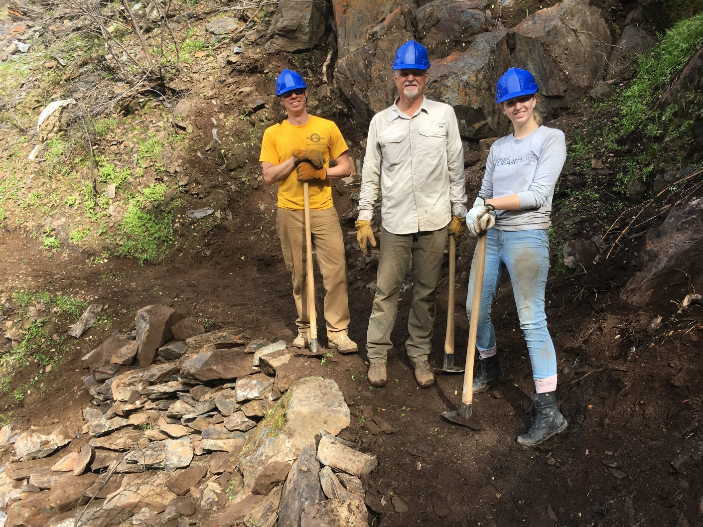
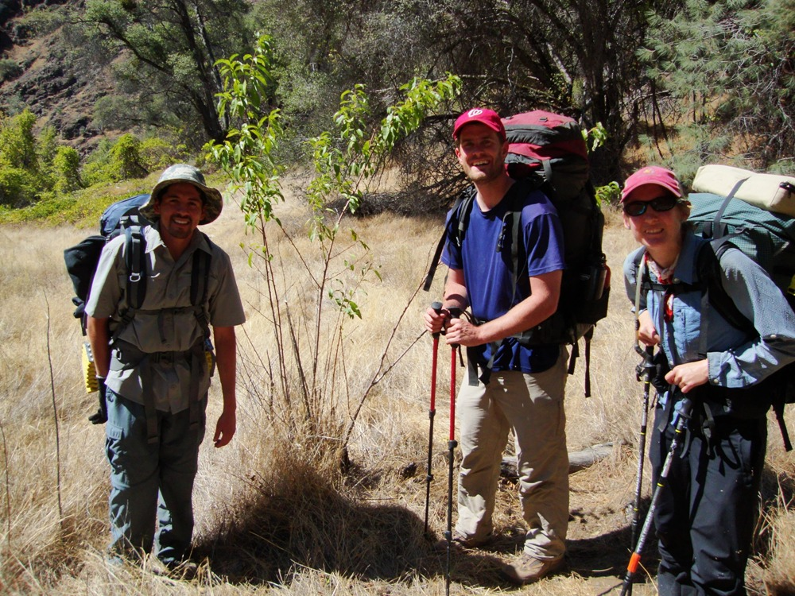
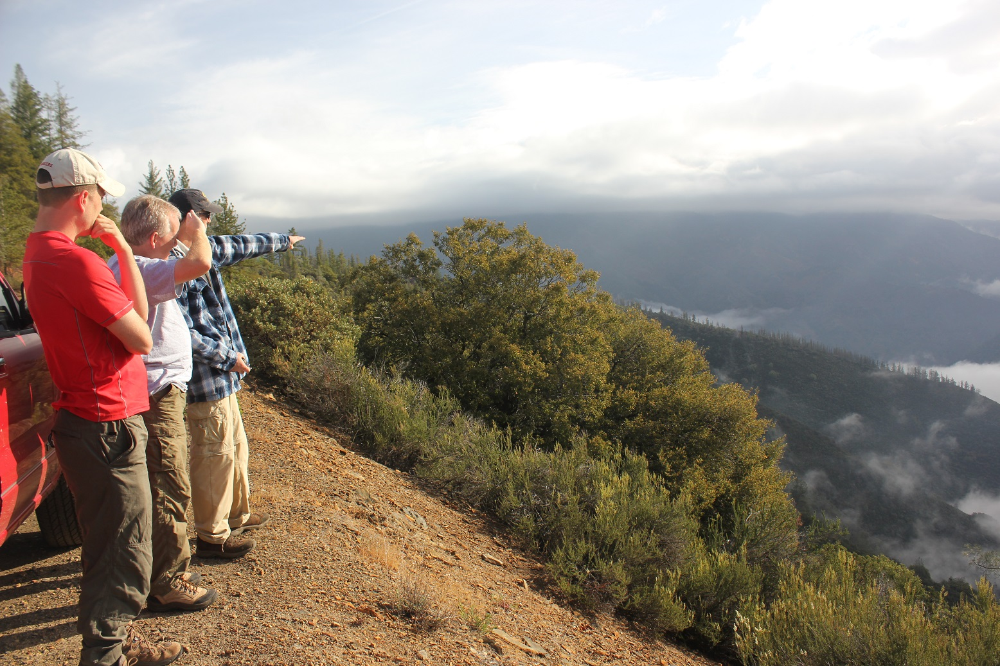

Tend the Trails
While Mariposa County is home to Yosemite National Park, it also contains other public lands that are closer to its citizens and less crowded. Mariposa Trails has stepped up to tend front-country trails for the enjoyment of all types of nature-based recreation, including hikers, cyclists, runners and equestrians. Most outings are in the fall and winter, when the soil is soft, the air is cool, and bugs are nowhere to be seen!

Fostering Health, Advancing Education and Promoting Stewardship of the Land
With access to nature secured through usable trails, our ultimate goal is to create opportunities to foster individual and community health, and promote land stewardship. This is realized through outdoor adventures, educational field trips, youth enrichment programs, athletic competitions, stewardship outings and forest restoration projects.

Advocate for Trails
The condition of trails is largely defined by the attention given to them by government agencies and their planning documents. Hence, Mariposa Trails seeks to form strong and positive partnerships with government agencies; to explain our mission and share information about the work we do; to promote events, projects and initiatives; and, to educate the community about our vision, activities and the places we work.
